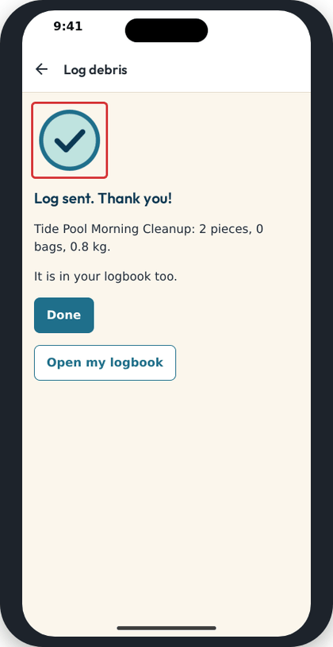
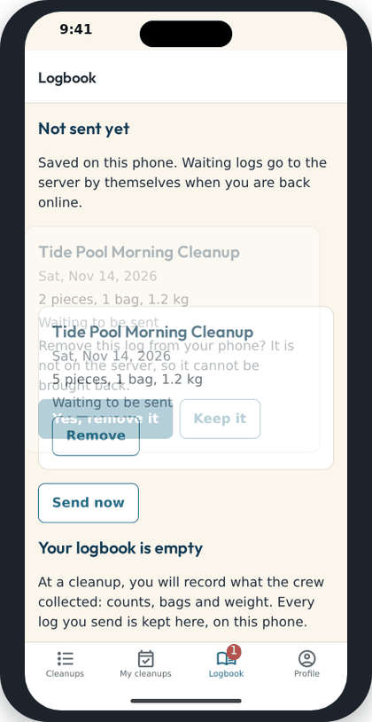
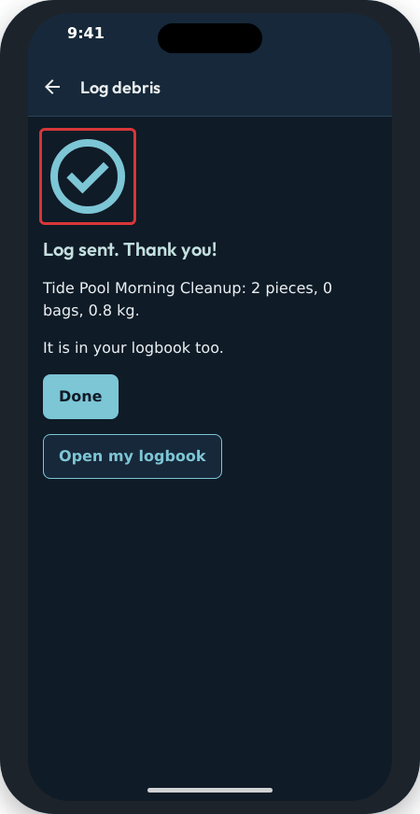
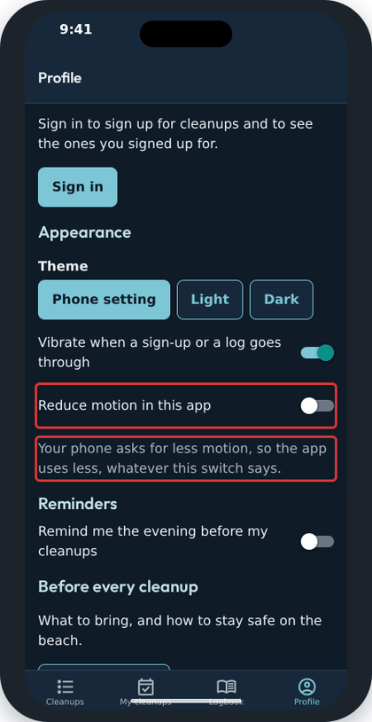

✨ Lesson 7.3: Motion Polish
When Theo removed his duplicate log last lesson, it was there in one frame and gone in the next, and everything below it jumped up the screen. When his log reached the server, the app said so in words and nothing else. And when Maya turned on Reduce Motion halfway through a cleanup, the tallies kept counting until she closed the app and opened it again. Today Shoreline Crew gets the finishing touches that make an app feel cared for: things that arrive, leave and make room the way objects do, a small illustrated moment when a log is safely on the server, and motion that steps aside the instant someone asks, from the phone's settings or from the app's own.
🎯 Learning Objectives
By the end of this lesson, you will be able to:
- Animate views that appear, disappear and move with Reanimated's layout animations (
entering,exiting,layout) and keep the first render still withLayoutAnimationConfig - Recognize where layout animations misbehave: rows recycled by FlashList, and a resizing container with moving children
- Play a Lottie animation with lottie-react-native, set up what the web preview needs for it, and check where an animation file comes from before shipping it
- Follow the phone's Reduce Motion setting while the app runs, with
AccessibilityInfoandReducedMotionConfig, and cover what Reanimated's setting does not reach - Decide whether an app needs its own motion switch, and build one that only ever adds to the phone's setting
📦 Code for this lesson
Starting code: lesson-27-start.zip · Finished code: lesson-27-end.zip. Each folder has a README with the commands to run it.
In This Lesson
👋 Welcome: Motion With a Job
Last lesson's "Before the Next Lesson" asked you to watch what happens when you delete something in the apps you use. Most good apps do the same three things: the item leaves (it slides away or fades, so you see which one went), the items around it make room (they glide into the gap instead of jumping, so you do not lose your place), and new items arrive gently. Each of those motions has a job: it answers "what just changed?" without a word. Motion with no job (a list that bounces in every time you open it) is the kind people learn to dislike.
Lesson 7.1 animated values you chose (a count, a bounce). Today's motion is about structure: views being added, removed and moved by React itself. You will also play a small illustrated animation, the kind a designer makes in an animation tool rather than in code, and you will finish the job Lesson 7.1 started on Reduce Motion. By the end of the lesson:
- The Logbook makes room. A removed waiting log slides out to the left (the way the swipe points) as it fades, the cards below glide up into the gap, and a log that arrives in the logbook fades in. Cards already there when you open the tab simply are there.
- A sent log gets a check mark. On "Log sent. Thank you!", a check mark in a circle draws itself once: a Lottie animation drawn for this course.
- Reduce Motion works while the app runs. Turn it on in the phone's settings with Shoreline Crew open, and the next count, slide or check mark simply does not move. No restart.
- And the app has its own switch, "Reduce motion in this app", for people who want calm in Shoreline Crew without changing every app on their phone.
Why it matters for your work: "polish" is where a design team's review comments pile up, and where cross-platform apps are told they feel "not quite native". Knowing which tool fits which motion (a layout animation, a Lottie file, a shared value) turns those comments into an afternoon's work. And motion that respects accessibility settings is increasingly a requirement in reviews and contracts, not a nice extra: a vestibular disorder can make a sliding screen physically unpleasant.
🌱 Polish is a practice
Nobody gets motion right on the first try: designers iterate on timing for days. Today you will remove the same log more than once, slow animations down to look at them, and switch motion off and on while the app runs. If something looks "a bit off" and you cannot name it yet, write that down anyway: by the end of the lesson you will have the words (entering, exiting, layout transition, reduced motion) to say what.
📦 Arriving, Leaving, Making Room
In the web course, animating an element that leaves the page was awkward: once React removes it from the DOM, there is nothing left to animate, so you reached for a library or kept the element around by hand. Reanimated solves it on the phone with layout animations: three props on any Animated component.
import { useState } from 'react';
import { Pressable, StyleSheet, Text, View } from 'react-native';
import Animated, { FadeIn, FadeOutLeft, LinearTransition } from 'react-native-reanimated';
// Tags that arrive, leave and make room: three props, no shared values
export function Arrivals() {
const [tags, setTags] = useState(['Glass', 'Rope', 'Bottle caps']);
return (
<View style={styles.list}>
<Pressable
accessibilityRole="button"
onPress={() => setTags((now) => [`Net ${now.length + 1}`, ...now])}
>
<Text>Add a tag</Text>
</Pressable>
{tags.map((tag) => (
<Animated.View
key={tag} // the key tells Reanimated which tag is which, as it tells React
entering={FadeIn.duration(250)} // when it mounts: fade in over 250 ms
exiting={FadeOutLeft} // when it unmounts: slide out to the left, fading
layout={LinearTransition} // when its place changes: glide there
style={styles.tag}
>
<Pressable
accessibilityRole="button"
accessibilityLabel={`Remove ${tag}`}
onPress={() => setTags((now) => now.filter((other) => other !== tag))}
>
<Text>{tag}</Text>
</Pressable>
</Animated.View>
))}
</View>
);
}
const styles = StyleSheet.create({
list: { gap: 8 },
tag: { padding: 12, borderRadius: 8, backgroundColor: '#bfe3df' },
});enteringplays when the view mounts: here, a tag added at the top fades in.exitingplays when React unmounts it. Reanimated keeps a copy of the view on screen just long enough to animate it away, then removes it for real. You did nothing special in React: the tag left the array, and that was enough.layoutplays when the view's position or size changes because something else changed: the tags below a removed one glide up instead of jumping.- The
keymatters more than ever: it is how React, and therefore Reanimated, knows that "Rope" is the same tag one row higher, not a new one.
Reanimated ships dozens of ready-made animations. A few families cover most needs:
| Family | Entering / exiting | Feels like |
|---|---|---|
| Fade | FadeIn, FadeOut, plus directions: FadeInDown, FadeOutLeft, … | Calm; the safest choice |
| Slide | SlideInRight, SlideOutLeft, … | Something moving in from off screen |
| Zoom | ZoomIn, ZoomOut, … | Something popping up in place |
| Others | BounceIn, FlipInXUp, LightSpeedInRight, PinwheelIn, … | Playful; use rarely, and never for data |
Layout transitions (layout) | LinearTransition, FadingTransition, SequencedTransition, JumpingTransition, CurvedTransition | How a view gets from its old place to its new one |
Each one takes modifiers you chain: FadeIn.duration(250), .delay(100), .springify() (a spring instead of a timing curve), .easing(…), and .reduceMotion(…), which you will use later. They follow the same Reduce Motion rule as Lesson 7.1's animation functions: by default (ReduceMotion.System), with Reduce Motion on, a view simply appears or disappears.
The first render is not news
entering plays whenever a view mounts, and that includes the moment a whole screen opens. Open the Logbook with ten logs in it, and ten cards fade in, every time: motion with no job. Reanimated's answer is a wrapper:
<LayoutAnimationConfig skipEntering>skips theenteringanimations of everything inside it while the wrapper itself first mounts. Views that mount later (a log that arrives while you watch) still animate.skipExitingdoes the same forexitingwhen the wrapper unmounts: a screen that closes does not need every card to wave goodbye.
💡 Mental model: making room on the bench
At the end of a cleanup, the crew sits on the sea wall to sort the bags. When someone leaves, they stand up and walk off to one side, and the people next to them shuffle along to close the gap. Nobody vanishes, and nobody teleports. That is exactly what exiting and layout do for a list. And when the crew first sits down, nobody makes a show of arriving one by one: that is skipEntering.
Where layout animations do not fit: recycled lists
Layout animations hang on mounting and unmounting. FlashList (Lesson 3.2) is built to avoid exactly that: rows that scroll off screen are recycled for rows coming on screen, with new props, and are never unmounted. The course measured it with 300 rows in the web preview, each wrapped in <Animated.View entering={FadeIn} exiting={FadeOut}>:
| What happened | Animations running (measured) |
|---|---|
| The list first appears | 38: every row on screen faded in (the first-render problem above) |
| A long scroll: Items 287 to 290 come on screen | 0: recycled rows, nothing mounted |
| Item 287 is pressed and removed from the data | 0: it was gone at once, and Item 288 was simply in its place |
So in a FlashList, entering fires for the first screenful only and exiting not at all. FlashList's own documentation offers a different route for layout changes: call prepareForLayoutAnimationRender() on the list's ref right before the data changes, which turns recycling off for that one render so React Native's built-in LayoutAnimation can animate it. The Cleanups list stays as it is: it gains nothing from motion. The Logbook's queue and logbook cards are drawn with map in a scrolling Screen (a few cards, never hundreds), so every card really mounts and unmounts, and layout animations work.
🎬 Lottie: Illustrated Motion
Some motion is drawing, not moving boxes: a check mark that draws itself, a wave that rolls in, a mascot that waves. Building that from views and shared values is possible and miserable. Lottie is the industry's answer: a designer animates vector shapes in a tool (Adobe After Effects with the Bodymovin exporter, or LottieFiles' own editor, Lottie Creator), and the result is a small JSON file describing the shapes, their colors and how they change over time. A player on the phone draws it, frame by frame, sharp at any size.
- lottie-react-native is the player for React Native (started at Airbnb, the company that created Lottie). On iPhone and Android it uses the platforms' own Lottie libraries, natively. It is part of Expo Go, so no development build is needed (Expo's documentation; Step 7 checks it).
- In the web preview, lottie-react-native draws with a different player,
@lottiefiles/dotlottie-react, which you install yourself: without it, the web bundle fails (Common Mistakes). That player is a WebAssembly program; measured in Chromium, it downloads its engine from a public CDN (cdn.jsdelivr.net) the first time an animation plays. Your phone app never needs it: the native players are built in.
Shoreline Crew's animation, assets/animations/log-sent.json, was written for this course by a small script (no animation tool, no downloaded art): a Seafoam disk grows in, a Sea Teal ring draws around it, then a Deep Tide check mark draws itself, in 1.5 seconds. Here is how a Lottie file is put together, from its first lines and the check mark's layer:
{
"v": "5.7.4",
"fr": 30,
"ip": 0,
"op": 45,
"w": 120,
"h": 120,
"nm": "Log sent",
"ddd": 0,
"assets": [],
"layers": [
{
"ddd": 0,
"ind": 1,
"ty": 4,
"nm": "Check",
...
"v": [
[-21, 1],
[-6, 16],
[22, -14]
],
...
"ty": "tm",
"nm": "Draw",
...
"e": {
"a": 1,
"k": [
{
"t": 16,
"s": [0],
...
{
"t": 32,
"s": [100]fris the frame rate (30 frames a second),ipandopthe first and last frame (45 frames: 1.5 seconds),wandhthe drawing's size. The player scales it to whatever size you give the view.layersare drawn top first: the check mark, then the ring, then the disk under them.- The check mark is a path through three points (
v), drawn with a stroke. The trick is the trim path ("ty": "tm", named "Draw"): its end (e) is animated ("a": 1) from 0% at frame 16 to 100% at frame 32, so the line draws itself from the first point to the last.iandoare the easing, like Lesson 7.1'sEasing.out.
🛑 Where did this animation come from?
A Lottie file is artwork, and artwork has an owner. Free animation marketplaces are full of tempting check marks and confetti, but each file comes with its own license (LottieFiles, the biggest library, shows a license on every animation; read it), and some "free" files on other sites were simply copied from someone else. Before an animation ships in an app that is published in a store, you should know who made it and that its license allows your use, commercial use included. Shoreline Crew's file was drawn for this course, so there is nothing to check. In your own projects: make it yourself, ask your designer, or keep a note of the source and license next to the file.
Two more things worth knowing before you choose Lottie: a file can embed images (photos inside the JSON), which makes it large and blurry when scaled, so prefer pure vector files; and a Lottie animation is decoration in the accessibility sense. Whatever it shows must also be said in words, as the "Log sent. Thank you!" heading does, and the animation itself is hidden from screen readers.
🧩 Version note: lottie-react-native 7 and the web
npx expo install lottie-react-native picks 7.5 for SDK 58 (7.5.1 when this lesson was checked). In version 7, web support comes from the dotLottie player, an optional companion package: npm does not install it for you, and only the web bundle needs it. Tutorials often drive Lottie with a progress prop and React Native's Animated; progress still works on phones, but the web player ignores it and warns in development ("lottie-react-native: progress is not supported on web", read in the package's web code), which is one reason today's still version is an icon rather than a frozen frame.
🧘 Reduce Motion, Live
Lesson 7.1 left two promises. First: Reanimated reads the phone's Reduce Motion setting once, when the app starts, so a volunteer who turns it on while Shoreline Crew is open sees no change until a restart. Second: some motion is not Reanimated's to reduce. The course measured the first one again today in the web preview, with Chrome's reduced-motion emulation switched on while the app was open (no reload), then a logbook brought in:
| App | Pieces tally after switching reduced motion on, no reload (measured) |
|---|---|
| Lesson 7.2's code (Reanimated's own reading) | Counted through 31 steps to 42, as if nothing had changed |
| Today's code | 0, then 42: no count, no bounce |
Three pieces make the difference:
- Hearing the change. React Native's
AccessibilityInfoanswersisReduceMotionEnabled()(a Promise) and sends areduceMotionChangedevent whenever the setting changes. On iPhone that is Reduce Motion; on Android, the "Remove animations" setting; in the web preview, react-native-web listens to the browser'sprefers-reduced-motion(read in its code). A small store, built like Lesson 5.3's settings store, keeps the latest answer. - Telling Reanimated. Reanimated's
<ReducedMotionConfig mode={…} />component sets whatReduceMotion.Systemmeans for the whole app. Rendered in the root layout withReduceMotion.AlwaysorReduceMotion.Neverfrom the store, every animation function and layout animation left at the default follows the setting live, from the next animation on: the tally, Lesson 7.2's spring, today's cards. - Covering the rest yourself, with one hook,
useReduceMotion(), for everythingReducedMotionConfigdoes not reach.
Read it top to bottom: two sources (the phone and, as the next section decides, the app's own switch) meet in one hook. Reanimated hears it through one component in the root layout; the two kinds of motion Reanimated does not draw (Lottie and the screens) hear it directly and swap in a still mark or a fade. Here is the full inventory of Shoreline Crew's motion, and who reduces each:
| Motion | Drawn by | With less motion | Who handles it |
|---|---|---|---|
| Tally count and bounce (7.1) | Reanimated functions | Totals appear at once | ReducedMotionConfig |
| Swipe spring back (7.2) | Reanimated functions | Snaps home (following the finger stays) | ReducedMotionConfig |
| Cards in, out and making room (today) | Reanimated layout animations | Appear and disappear in place | ReducedMotionConfig |
| Tally highlight (7.1) | Reanimated CSS-style transition | Kept: a color fading in place is the gentle substitute Apple suggests | (a choice, not an oversight) |
| The log-sent check mark (today) | Lottie's own player | A still check mark | useReduceMotion() |
| Screens sliding in and out | The phone's native navigation | A fade | useReduceMotion() in the root Stack |
| Spinners, pull to refresh | The phone | Unchanged: they show that something is happening | (the phone) |
Screens are the subtle one. Expo Router's Stack pushes and pops screens with the phone's own native transitions, not with Reanimated, so ReducedMotionConfig cannot touch them. Its animation screen option can: 'fade' instead of 'default' when motion should be reduced. Expo Router's types say the option works "only on iOS and Android", so the web preview, which has no slide to begin with, shows nothing different; Step 7 checks it on your phone. The phone's own Reduce Motion setting may already soften some system transitions; the app's own switch is something only your code knows about, which is the main reason this line exists.
📱 On your phone
Per React Native's documentation, reduceMotionChanged fires on both iPhone and Android when the setting changes while your app is open; on Android the setting it follows is the system animation scale that "Remove animations" sets to zero. The course could only switch the setting live in the web preview (measured above). Step 7 has you switch it on your phone with Shoreline Crew open; if your phone does not tell the app, the next restart still picks it up, exactly as in Lesson 7.1.
🎚️ An In-App Switch: The Decision
Lesson 7.1 left an open question: should Shoreline Crew have its own motion switch, like Lesson 6.5's "Vibrate when a sign-up or a log goes through"? The phone already has a setting, so this is a real design decision, and the kind you will be asked to defend in a review. The options:
| Option | For | Against |
|---|---|---|
| No switch: follow the phone only | One source of truth; nothing to build | The phone's setting is all or nothing: every app, and the system's own animations, change with it |
| A switch that only adds (off: follow the phone; on: less motion here too) | Calm in one app without changing the whole phone; easy to find; the phone's setting still always wins | One more line in Profile |
| A three-way choice (phone / less / full) | Most control | "Full" would override someone's accessibility setting: an app should never turn motion back on against the phone |
Shoreline Crew's decision: a switch that only adds, reduceMotion in the settings store, off by default. The reasons, in the order a reviewer would ask:
- The phone's setting is the person's word for every app, often for a medical reason. The app follows it always, and nothing in the app can switch motion back on while it is set (the note under the switch says so).
- Not everyone who wants calm wants it everywhere. A volunteer who finds the counting tallies distracting on a bumpy bus ride should not have to change every app and the phone's own screens. Android's setting is also easy to miss (it moves between phone makers' menus, Lesson 7.1).
- It mirrors the vibration switch. Lesson 6.5's
hapticsOnis on by default and can only take buzzes away;reduceMotionis off by default and can only take motion away. Both in-app switches only ever reduce. - It is cheap. One field in a store that already validates and saves, one line in
useReduceMotion(), one switch on Profile.
The phone's setting cannot be changed by an app (there is no API for that), only read, so the switch does not try to mirror it: it shows its own value, and the note under it says when the phone is asking for less motion anyway.
⚠️ Common Mistakes
Each of these was made on purpose in a copy of the finished project and measured in the web preview, except where the card quotes a library's own code.
⚠️ Lottie without the web player
Install only lottie-react-native, and the phone is happy, tsc and expo lint are silent, but the web bundle cannot be built. Measured with npx expo export --platform web (pressing w in npx expo start bundles the same way and shows the same message):
Expected output
Error: Unable to resolve module @lottiefiles/dotlottie-react from ~/shoreline/shoreline-crew/node_modules/lottie-react-native/lib/module/LottieView/index.web.js: @lottiefiles/dotlottie-react could not be found within the project or in these directories:
node_modules
1 | import React, { forwardRef, useImperativeHandle, useEffect, useCallback, useState } from 'react';
2 | import { parsePossibleSources } from './utils';
> 3 | import { DotLottieReact } from '@lottiefiles/dotlottie-react';
| ^
4 | const LottieView = /*#__PURE__*/forwardRef(({
5 | source,
6 | speed,
Import stack:
node_modules/lottie-react-native/lib/module/LottieView/index.web.js
| import "@lottiefiles/dotlottie-react"
node_modules/lottie-react-native/lib/module/index.js
| import "./LottieView"
src/components/LogSentMark.tsx
| import "lottie-react-native"
src/app/log/[id].tsx
| import "@/components/LogSentMark"Read the import stack from the bottom up: your screen imports LogSentMark, which imports lottie-react-native, whose web file (index.web.js, the same .web rule as Lesson 6.3's map) needs the dotLottie player. npx expo install @lottiefiles/dotlottie-react fixes it.
⚠️ A layout transition on the box and on what is in it
It is tempting to put layout={LinearTransition} on everything, including the queue's section that holds the cards. Measured with two waiting logs, removing the first: with layout on the section too, the second card was drawn 323 pixels below its old place before sliding up, and the leaving card drifted 110 pixels down the screen as it faded; without it on the section, the second card glided straight up from where it was, and the leaving card faded out in its own place. Two transitions measuring the same change from two levels fight each other. Put layout on the views that move (the cards, the section below the queue), not on a box whose only change is its height.
⚠️ entering and exiting on FlashList rows
No error, no warning, and the first screenful even fades in, so it looks as if it works. Then rows scrolled into view never animate, and a removed row vanishes at once (measured: 0 animations for both, Arriving, Leaving, Making Room), because recycled rows are never mounted or unmounted. In a FlashList, animate inside the row with shared values (keyed by the item, Lesson 3.2's useRecyclingState), or use FlashList's prepareForLayoutAnimationRender() with React Native's LayoutAnimation.
⚠️ Expecting Reanimated's useReducedMotion() to follow changes
Its name sounds like a live answer, but its code is one line: return IS_REDUCED_MOTION_ENABLED_IN_SYSTEM;, a value read when the app started. Lesson 7.1 said so; today it was measured from the other side: with the setting switched on while the app ran, Lesson 7.2's code counted the tally through 31 steps. For anything that must follow the setting, use your own useReduceMotion() (Step 2), and keep Reanimated in step with ReducedMotionConfig.
⚠️ Hiding decoration with props the web preview ignores
The first version of today's LogSentMark hid itself from screen readers the way Lesson 7.2's red strip does, with accessibilityElementsHidden (iPhone) and importantForAccessibility="no-hide-descendants" (Android). Measured in the web preview: neither reached the page, and the animation's <canvas> had no aria-hidden anywhere above it; react-native-web only turns the aria-hidden prop into the HTML attribute (read in its code). React Native itself has accepted aria-hidden for a while and, per its View code, turns aria-hidden into both of the phone props. So aria-hidden is one prop that works on all three. (The red strip and the icons from earlier lessons are hidden on phones, as those lessons say; Lesson 8.1 tidies them up with a screen reader in hand.)
🛠️ Project: Polish the Logbook
You install the Lottie player and add the animation file, build the motion store and connect it to Reanimated and the screens, put the switch on Profile, give the Logbook its layout animations, then add the check mark. Then you watch all of it in the web preview, switch motion off and on while the app runs, and try it on your phone.
Step 1: Lottie and its animation (10 min)
In the shoreline-crew folder, install the player and its web companion in one command:
npx expo install lottie-react-native @lottiefiles/dotlottie-reactExpected output
env: load .env.local
env: export EXPO_PUBLIC_API_URL
› Installing 1 SDK 58.0.0 compatible native module and 1 other package using npm
> npm install --save @lottiefiles/dotlottie-react
added 3 packages, and audited 826 packages in 2s
167 packages are looking for funding
run `npm fund` for details
8 moderate severity vulnerabilities
To address issues that do not require attention, run:
npm audit fix
To address all issues (including breaking changes), run:
npm audit fix --force
Run `npm audit` for details.npx expo install sorts the two: lottie-react-native is a native module that Expo knows (it picks ~7.5.0 for SDK 58), and the dotLottie player is "1 other package", installed by npm as usual. The vulnerabilities line was there before today: npm audit reports on the whole project, and "moderate" warnings in development tools are common; read them, but do not run npm audit fix --force on an Expo project (it can move packages off the versions the SDK expects).
Then add the animation. Create a folder assets/animations in shoreline-crew and save log-sent.json into it (also in the finished code). Open it in your editor and find the parts from Lottie: Illustrated Motion: the 45 frames, the three layers, the trim path called "Draw".
Step 2: Reduce Motion, followed live (20 min)
First the app's own setting. In src/state/settings.ts, add reduceMotion exactly the way Lesson 6.5 added hapticsOn: a field, a default, and a check of what was saved:
hapticsOn: boolean;
+ /** Less motion in this app, even when the phone's own Reduce Motion is off (off until asked) */
+ reduceMotion: boolean;
};
// ...
-const defaults: Settings = { theme: 'system', remindersOn: false, hapticsOn: true };
+const defaults: Settings = {
+ theme: 'system',
+ remindersOn: false,
+ hapticsOn: true,
+ reduceMotion: false,
+};
const themeChoices: ThemeChoice[] = ['system', 'light', 'dark'];
// ...
'hapticsOn' in value && typeof value.hapticsOn === 'boolean' ? value.hapticsOn : undefined;
+ const reduceMotion =
+ 'reduceMotion' in value && typeof value.reduceMotion === 'boolean'
+ ? value.reduceMotion
+ : undefined;
return {
// ...
hapticsOn: hapticsOn ?? defaults.hapticsOn,
+ reduceMotion: reduceMotion ?? defaults.reduceMotion,
};Settings saved before today have no reduceMotion, so they get the default, false, as the other fields did. Now the store that follows the phone. Create src/state/motion.ts:
// Reduce Motion, followed while the app runs. Reanimated reads the phone's setting once, when the
// app starts; this store keeps listening, and adds the app's own switch (settings.ts).
import { useSyncExternalStore } from 'react';
import { AccessibilityInfo } from 'react-native';
import { useSettings } from '@/state/settings';
// What the phone says right now: iPhone Reduce Motion, Android Remove animations, or the
// browser's prefers-reduced-motion in the web preview
let phoneReduces = false;
const listeners = new Set<() => void>();
function setPhoneReduces(reduces: boolean) {
phoneReduces = reduces;
for (const listener of listeners) {
listener();
}
}
/** Read the phone's setting and follow its changes from now on. Call it once, at startup. */
export async function loadMotion(): Promise<void> {
// Listen first, so a change made while the first answer is on its way is not lost
AccessibilityInfo.addEventListener('reduceMotionChanged', setPhoneReduces);
try {
setPhoneReduces(await AccessibilityInfo.isReduceMotionEnabled());
} catch (error) {
console.warn('Could not read the Reduce Motion setting', error);
}
}
function subscribe(listener: () => void) {
listeners.add(listener);
return () => {
listeners.delete(listener);
};
}
/** true while the phone's own setting asks for less motion */
export function usePhoneReducesMotion(): boolean {
// The web preview's server has no phone: full motion until the page is running
return useSyncExternalStore(subscribe, () => phoneReduces, () => false);
}
/** true when motion should step aside: the phone asks for it, or the volunteer did, in the app */
export function useReduceMotion(): boolean {
const phone = usePhoneReducesMotion();
const { reduceMotion } = useSettings();
return phone || reduceMotion;
}- The same shape as
settings.ts: a module-level value, a set of listeners,useSyncExternalStore(as in the web course's external stores). The value is the phone's answer, not something saved: it is asked again every start. loadMotion()listens first, then asks. The event keeps the store current for the rest of the app's life; the listener is never removed, because the store lives as long as the app.- Two hooks.
usePhoneReducesMotion()is only the phone's setting (Profile needs it for its note);useReduceMotion()is the one the rest of the app uses: the phone or the app's switch. Neither can turn motion on against the phone: that is the decision from the last section, written as||. - The third function of
useSyncExternalStoreanswers for the web preview's server render, which has no phone and no settings.
Last, the root layout: load the setting behind the splash screen with everything else, tell Reanimated, and fade screens instead of sliding them. In src/app/_layout.tsx:
import { GestureHandlerRootView } from 'react-native-gesture-handler';
+import { ReducedMotionConfig, ReduceMotion } from 'react-native-reanimated';
// ...
import { loadLogQueue } from '@/state/logQueue';
+import { loadMotion, useReduceMotion } from '@/state/motion';
import { loadSettings } from '@/state/settings';
// ...
const { scheme, colors } = useTheme();
+ // The phone's Reduce Motion or the app's own switch, followed while the app runs
+ const reduceMotion = useReduceMotion();
// What a browser tells TanStack Query by itself, a phone's app has to: back in the foreground,
// ...
useEffect(() => {
- Promise.all([loadSession(), loadSettings(), loadLogQueue()]).finally(() =>
+ Promise.all([loadSession(), loadSettings(), loadLogQueue(), loadMotion()]).finally(() =>
setSavedLoaded(true),
// ...
<GestureHandlerRootView style={styles.root}>
+ {/* Every Reanimated animation left at ReduceMotion.System (the default) follows this, live */}
+ <ReducedMotionConfig mode={reduceMotion ? ReduceMotion.Always : ReduceMotion.Never} />
{/* The one cache, for every screen (as in the HQ) */}
// ...
headerBackTitle: 'Back',
+ // Screens slide in and out natively, not with Reanimated: with less motion, they fade
+ animation: reduceMotion ? 'fade' : 'default',
}}ReducedMotionConfigdraws nothing. Rendered withReduceMotion.Always, every Reanimated animation left atReduceMotion.Systemjumps to its end; withReduceMotion.Never, they all animate. WhenreduceMotionchanges, the component updates Reanimated at once, so the next animation follows (one already running finishes).- In development, Reanimated's code prints one warning when the component first appears:
[Reanimated] Reduced motion setting is overwritten with mode 'never'.(or'always'). That is the point of the component: your app is now in charge of the setting. The warning is not printed in a release build. animation: reduceMotion ? 'fade' : 'default'in the Stack'sscreenOptionsapplies to every screen in it: pushed screens (a cleanup) and modals (the debris log) fade in instead of sliding.
Step 3: The switch on Profile (10 min)
In src/app/(tabs)/profile.tsx, put the switch under the vibration switch, with a note that changes when the phone is already asking for less motion:
import { useSession } from '@/hooks/useSession';
+import { usePhoneReducesMotion } from '@/state/motion';
import { changeSettings, type ThemeChoice, useSettings } from '@/state/settings';
// ...
const settings = useSettings();
+ const phoneReducesMotion = usePhoneReducesMotion();
// true when the API said this phone's sign-in has ended (any screen's request can find out)
// ...
/>
+ {/* Off by default: the phone's own Reduce Motion is the first word, this switch only adds */}
+ <SwitchRow
+ label="Reduce motion in this app"
+ value={settings.reduceMotion}
+ onValueChange={(reduceMotion) => changeSettings({ reduceMotion })}
+ />
+ <AppText variant="muted">
+ {phoneReducesMotion
+ ? 'Your phone asks for less motion, so the app uses less, whatever this switch says.'
+ : 'Counting, sliding and bouncing stop; fades stay. Your phone setting counts too.'}
+ </AppText>
{/* Off until the volunteer turns it on: only then does the phone ask about notifications */}- The switch reuses Lesson 2.4's
SwitchRow, so its label is its accessible name: a screen reader says "Reduce motion in this app, switch, off". - The note tells the truth in both cases. Normally it says what the switch does (and that fades stay, so nobody expects a frozen app). When the phone asks for less motion, it says the app follows the phone whatever the switch says: otherwise someone would flip the switch off and wonder why nothing moves.
Step 4: The Logbook makes room (20 min)
In src/app/(tabs)/logbook.tsx, import what you need from Reanimated:
import { StyleSheet, View } from 'react-native';
+import Animated, {
+ FadeIn,
+ FadeOut,
+ FadeOutLeft,
+ LayoutAnimationConfig,
+ LinearTransition,
+} from 'react-native-reanimated';
import { useShallow } from 'zustand/react/shallow';A logbook entry becomes an Animated.View that fades in when it arrives and glides when entries above it change:
return (
- <View key={item.clientId} style={styles.card}>
+ // A log that just arrived fades in; the others glide down to make room
+ <Animated.View
+ key={item.clientId}
+ style={styles.card}
+ entering={FadeIn}
+ layout={LinearTransition}
+ >
<AppText variant="heading">{item.eventTitle}</AppText>
// ...
{item.note !== '' && <AppText variant="muted">{item.note}</AppText>}
- </View>
+ </Animated.View>
);A waiting log gets an Animated.View around its SwipeToRemove: the swipe moves the card inside, the layout animation moves the whole thing. The key moves out to the new outermost element, and everything inside moves in by two spaces:
function waitingEntry(item: QueuedLog) {
const { event, log } = item;
const pieces = log.items.reduce((sum, { count }) => sum + count, 0);
return (
// A card that leaves slides out the way the swipe points; the cards below glide up
<Animated.View
key={log.clientId}
entering={FadeIn}
exiting={FadeOutLeft}
layout={LinearTransition}
>
{/* Swipe left to ask; never while the queue is sending (it may be sending this log) */}
<SwipeToRemove enabled={!sending} onSwipe={() => setAsking(log.clientId)}>
<View style={styles.card}>
<AppText variant="heading">{event.title}</AppText>
{/* ... */}
</View>
</SwipeToRemove>
</Animated.View>
);
}Then the screen itself: the content goes inside LayoutAnimationConfig skipEntering, the queue becomes one section that fades out when it empties, and everything below it becomes a second section that glides up. Replace the return of MyLogbook (the lines inside the two sections are the ones you had, moved in):
return (
<Screen scroll edges={['left', 'right']}>
{/* What is here when the Logbook opens is not news: only later arrivals animate in */}
<LayoutAnimationConfig skipEntering>
{queued.length > 0 && (
// The queue. When it empties, it fades out, and the logbook below glides up
<Animated.View style={styles.section} exiting={FadeOut}>
<AppText variant="heading" accessibilityRole="header">
Not sent yet
</AppText>
{(sending || waitingCount > 0) && (
<AppText accessibilityLiveRegion="polite">
{sending
? 'Sending…'
: 'Saved on this phone. Waiting logs go to the server by themselves ' +
'when you are back online.'}
</AppText>
)}
{queued.map(waitingEntry)}
{waitingCount > 0 && (
// Below the cards, so it moves when they do: it glides too
<Animated.View layout={LinearTransition}>
<Button
label="Send now"
disabled={sending}
onPress={() => sendWaitingLogs(viewer)}
/>
</Animated.View>
)}
</Animated.View>
)}
<Animated.View style={styles.section} layout={LinearTransition}>
<AppText variant="heading" accessibilityRole="header">
{entries.length === 0 ? 'Your logbook is empty' : 'Your logbook'}
</AppText>
{entries.length === 0 ? (
<AppText>
At a cleanup, you will record what the crew collected: counts, bags and weight.
Every log you send is kept here, on this phone.
</AppText>
) : (
<View style={styles.tallies}>
<Tally value={totals.logs} label={totals.logs === 1 ? 'log' : 'logs'} />
<Tally value={totals.pieces} label={totals.pieces === 1 ? 'piece' : 'pieces'} />
<Tally value={totals.bags} label={totals.bags === 1 ? 'bag' : 'bags'} />
<Tally value={tenths(totals.weightKg)} label="kg" decimals={1} />
</View>
)}
{entries.length > 0 && <ShareLogbook entries={entries} />}
{entries.map(entry)}
<AppText variant="heading" accessibilityRole="header">
Logs from before
</AppText>
<AppText>Logs you sent earlier, or from another phone, are on the server.</AppText>
<Button
label={bringIn.isPending ? 'Bringing in…' : 'Bring in my sent logs'}
disabled={bringIn.isPending}
onPress={() => bringIn.mutate()}
/>
{bringIn.isPaused && (
<AppText variant="muted" accessibilityLiveRegion="polite">
No connection: your logs come in when you are back online.
</AppText>
)}
{bringIn.isSuccess && (
<AppText variant="muted" accessibilityLiveRegion="polite">
Done: the server has {bringIn.data} {bringIn.data === 1 ? 'log' : 'logs'} of yours,
and your logbook has them all.
</AppText>
)}
{bringIn.isError && (
<AppText variant="error" accessibilityRole="alert">
{describeError(bringIn.error)}
</AppText>
)}
</Animated.View>
</LayoutAnimationConfig>
</Screen>And the style for the two sections, at the top of the styles:
const useStyles = createThemedStyles(({ colors }) => StyleSheet.create({
+ section: {
+ gap: spacing.md, // the same gap as the Screen around it
+ },
tallies: {- Why two sections? A
layouttransition only moves the view it is on. Without the second section, the headings, the tallies and the buttons below the queue would each need their ownlayoutprop. OneAnimated.Viewaround them moves them together, and itsgapkeeps the spacing theScreengave them. - The Send now button gets its own
Animated.Viewwithlayout: it sits below the cards, so it moves when one leaves. The first try at this lesson left it out, and the button jumped up at once and slid under the card that was still gliding: everything that moves needs the prop, not only the cards. - No
layouton the queue section, onlyexiting: it never moves (it is first on the screen), it only gets shorter, and a transition there fights the cards' own (Common Mistakes). FadeOutLeftslides a removed card a little to the left as it fades: the direction of the swipe that removed it, which ties the two motions together.skipEnteringmeans opening the Logbook draws everything in place; a log sent while you watch (Send now) leaves the queue to the left, and its entry fades into the logbook.
Step 5: The log-sent mark (15 min)
The still version needs an icon. Add it to src/components/Icon.tsx:
remove: { ios: 'trash', android: 'delete', web: 'delete' },
+ sent: { ios: 'checkmark.circle.fill', android: 'check_circle', web: 'check_circle' },
// The tab barCreate src/components/LogSentMark.tsx:
import LottieView from 'lottie-react-native';
import { StyleSheet, View } from 'react-native';
import logSent from '@/assets/animations/log-sent.json';
import { Icon } from '@/components/Icon';
import { useTheme } from '@/hooks/useTheme';
import { useReduceMotion } from '@/state/motion';
const size = 96;
// "It reached the server": a check mark that draws itself once (a Lottie animation drawn for
// Shoreline Crew), or a still one when motion should step aside. Decoration: the heading beside
// it says the same in words, so screen readers skip it.
export function LogSentMark() {
const reduceMotion = useReduceMotion();
const { colors } = useTheme();
return (
// The size goes on this View: the web preview's player ignores style and fills its parent.
// aria-hidden hides it from screen readers on iPhone, Android and the web preview alike.
<View style={styles.mark} aria-hidden>
{reduceMotion ? (
<Icon name="sent" size={size} color={colors.action} />
) : (
<LottieView source={logSent} autoPlay loop={false} style={styles.mark} />
)}
</View>
);
}
const styles = StyleSheet.create({
mark: {
width: size,
height: size,
},
});import logSent from '@/assets/animations/log-sent.json'brings the JSON in as an object (Expo's TypeScript settings allow JSON imports), and Metro bundles it with the app: it works offline, like the rest of the code.sourcealso accepts a URL, but a check mark should not need the network.autoPlayandloop={false}: play once, when the mark appears, and stop on the last frame.- Lottie's player is not Reanimated, so
ReducedMotionConfigcannot stop it.useReduceMotion()decides instead: with less motion, a still check mark (thesenticon in the theme's action color) says the same thing. Measured in the web preview with reduced motion on: no<canvas>at all, the icon in its place. - The size is on the wrapping
View. On phones,stylesizes the Lottie view; in the web preview the player ignoresstyle(it has a separatewebStyleprop) and fills its parent, so the parent's 96 points size it there (measured: a 96 by 96 canvas either way).
Then show it in src/app/log/[id].tsx, above the heading, only when the log has left the queue (the server has it):
import { LogPhotos } from '@/components/LogPhotos';
+import { LogSentMark } from '@/components/LogSentMark';
import { Screen } from '@/components/Screen';
// ...
<Screen scroll edges={['bottom', 'left', 'right']}>
+ {queued === undefined && <LogSentMark />}
<AppText variant="heading" accessibilityRole="header" accessibilityLiveRegion="polite">If the log was saved while offline, the screen says "Saved on this phone" with no mark; if the queue sends it while the volunteer is still looking, the heading changes to "Log sent. Thank you!" and the mark appears and draws itself right then.
Step 6: Watch it, then turn motion off (15 min)
Start shoreline-api and npx expo start, open the web preview (w) and sign in as theo.nakamura@example.com (password shoreline-demo).
- Open today's Tide Pool Morning Cleanup, Log what you collected, add two glass and
0.8kg, and Send the log: the check mark draws itself above "Log sent. Thank you!" (the first time, the web preview may take a moment to download its player).

- Get two logs waiting, as in Lesson 7.2: stop shoreline-api with Ctrl+C (the same keys on a Mac), send two small logs, start the API again only after the next step. Open the Logbook: the cards are simply there (no fade:
skipEntering). Press Remove on the first card, then Yes, remove it: it slides out to the left as it fades, and the second card glides up into its place.

- Start the API again and press Send now: the last waiting card leaves to the left as the "Not sent yet" section fades away, and in the logbook below, the new entry fades in while the tallies count (measured: all of it within about 300 ms, the tallies a little longer).
- Without reloading, open Chrome's DevTools (F12, or ⌥ Option+⌘ Cmd+I on a Mac), ⋮ > More tools > Rendering, and set "Emulate CSS media feature prefers-reduced-motion" to reduce. Open the Profile tab: the note under "Reduce motion in this app" has already changed. Send another log: a still check mark, and on the Logbook the tallies jump to their totals. No restart, unlike Lesson 7.1.
- Set the emulation back to "No emulation", then turn on Reduce motion in this app instead: the same result, and it stays after a reload, because it is saved like the theme. Turn it off again.


Step 7: Check it, then feel it on your phone (10 min)
Run npx tsc --noEmit and npx expo lint: both should print nothing but the env: lines. Then in Expo Go (with your computer's address in .env.local, Lesson 5.1):
- Send a log: the check mark should draw itself, smoothly, with no development build (lottie-react-native is part of Expo Go).
- Get two logs waiting (stop the API just before sending) and remove one: it should slide out to the left and the other glide up.
- With Shoreline Crew open, turn on Reduce Motion (iPhone: Settings > Accessibility > Motion > Reduce Motion; Android: Settings > Accessibility > Remove animations, names vary) and come back without closing the app. Profile's note should already say the phone asks for less motion; open a cleanup: the screen should fade in rather than slide. Send a log: a still check mark.
- Turn the phone's setting off, and the app's switch on: the cleanup screen should fade, the tallies jump, the check mark stay still. Turn it off.
If your phone keeps animating after you change its setting until you restart the app, write down the model and system version: that is worth a bug report, and the restart still works.
✅ Project Completion Checklist
- lottie-react-native and @lottiefiles/dotlottie-react are installed, and
assets/animations/log-sent.jsonis in the project src/state/motion.tsfollows the phone's setting while the app runs, anduseReduceMotion()adds the app's own switch- The root layout renders
ReducedMotionConfigfromuseReduceMotion(), and screens fade instead of sliding when motion is reduced - Profile has "Reduce motion in this app" (off by default, saved) and a note that says when the phone already asks for less motion
- On the Logbook, removed cards slide out, the rest glide into place, and nothing animates when the tab first opens
- A sent log shows a check mark that draws itself, or a still one with less motion; screen readers skip both
npx tsc --noEmitandnpx expo lintpass
Your own app: list every kind of motion in your final project's app (counts, springs, things arriving and leaving, illustrations, screen transitions) in a table like the one in Reduce Motion, Live: who draws it, what it does with less motion, and who handles that. Decide whether your app needs its own motion switch, and write down why.
🏋️ Hands-on Exercises
Optional, but recommended: each one takes five to fifteen minutes. Undo code changes afterwards; the next lesson starts from the project as Step 7 left it.
🏋️ Exercise 1: What moves?
Without running anything, say what the volunteer sees in each case, with today's code:
- Theo opens the Logbook tab, which holds three sent logs and one waiting log.
- Maya turns on Reduce Motion in her phone's settings, goes back to Shoreline Crew without closing it, and removes a waiting log.
- Theo's phone setting is off, but he turned on "Reduce motion in this app". He sends a log, then opens a cleanup.
- Maya's phone asks for reduced motion, and she turns "Reduce motion in this app" off.
- A teammate adds
entering={FadeIn}to the cards of the Cleanups list (a FlashList) and scrolls to the bottom.
💡 Hint
For each case ask: does a view mount, unmount or move (and inside skipEntering or not)? What does useReduceMotion() return, and who listens to it: ReducedMotionConfig, LogSentMark, the Stack?
✅ Solution
(1) Nothing moves: everything mounts with the screen, inside skipEntering (measured: no animations when the Logbook reopened). (2) The card disappears at once and the cards below are in their new places at once: the event updated the store, ReducedMotionConfig switched to Always, and layout animations follow it, no restart needed. (3) A still check mark (useReduceMotion() is true because of the switch), and the cleanup screen fades in instead of sliding (on a phone; the web preview has no slide). (4) Still less motion: the switch only adds, so phone || reduceMotion is true, and Profile's note says the phone is asking. (5) The first screenful fades in once; rows scrolled into view do not (recycled, never mounted).
🏋️ Exercise 2: A dissolve instead of nothing
With less motion, a removed card now vanishes in one frame. Apple's guidance suggests replacing movement with a gentle dissolve rather than removing every transition. Make a waiting card fade out quickly (150 ms, no slide) when motion is reduced, and slide out as today otherwise. Put the Animated.View from waitingEntry in a small component of its own.
💡 Hint
Layout animations take modifiers, including .reduceMotion(…): ReduceMotion.Never makes one animation ignore the app-wide setting. Choose the animation with useReduceMotion().
✅ Solution
src/components/LeavingCard.tsx, then <LeavingCard key={log.clientId}>…</LeavingCard> in waitingEntry in place of the Animated.View:
import type { ReactNode } from 'react';
import Animated, {
FadeIn,
FadeOut,
FadeOutLeft,
LinearTransition,
ReduceMotion,
} from 'react-native-reanimated';
import { useReduceMotion } from '@/state/motion';
// Exercise 2: with less motion, the card does not slide away: it dissolves (a fade that always runs)
export function LeavingCard({ children }: { children: ReactNode }) {
const reduceMotion = useReduceMotion();
return (
<Animated.View
entering={FadeIn}
exiting={reduceMotion ? FadeOut.duration(150).reduceMotion(ReduceMotion.Never) : FadeOutLeft}
layout={LinearTransition}
>
{children}
</Animated.View>
);
}The fade has to say ReduceMotion.Never, or ReducedMotionConfig would skip it like everything else. That is the one place where ignoring the setting is right: you are not adding motion back, you are choosing the gentle substitute yourself. Keep it short and never let it move anything.
🏋️ Exercise 3: Play it again (Stretch)
In a scratch screen, show the check mark with a "Play it again" button next to it that replays the animation from the start. It is a good way to look at the timing frame by frame (press it repeatedly), and it teaches the player's other half: the ref.
💡 Hint
LottieView is a class component, so useRef<LottieView>(null) gives you its methods: play(startFrame?, endFrame?), pause(), resume(), reset().
✅ Solution
import LottieView from 'lottie-react-native';
import { useRef } from 'react';
import { Pressable, StyleSheet, Text, View } from 'react-native';
import logSent from '@/assets/animations/log-sent.json';
// Exercise 3: the same animation, played again on a press (the ref gives play, pause, reset, resume)
export function LogSentReplay() {
const lottie = useRef<LottieView>(null);
return (
<View style={styles.row}>
<View style={styles.mark} aria-hidden>
<LottieView ref={lottie} source={logSent} autoPlay loop={false} style={styles.mark} />
</View>
<Pressable accessibilityRole="button" onPress={() => lottie.current?.play(0)}>
<Text>Play it again</Text>
</Pressable>
</View>
);
}
const styles = StyleSheet.create({
row: { flexDirection: 'row', alignItems: 'center', gap: 16 },
mark: { width: 96, height: 96 },
});play(0) starts from frame 0 (on the web preview, the player sets frame 0 and plays, per lottie-react-native's web code). play(16, 32) would play only the check mark's stroke. Leave this replay out of the real app: a check mark that can be replayed is a toy, and the app's mark has a job to do once.
🎯 Quick Quiz
🎯 Check Your Understanding
Question 1: Theo removes the first of two waiting logs. What makes the second card glide up into the gap instead of jumping?
Question 2: A teammate gives every row of the Cleanups FlashList entering={FadeIn} and exiting={FadeOut}. What will testers see?
Question 3: Maya turns on Reduce Motion in her phone's settings while Shoreline Crew is open (today's code), goes back to the app and sends a debris log. What does she see?
Question 4: Why does LogSentMark check useReduceMotion() itself, when the root layout already renders ReducedMotionConfig?
Question 5: A volunteer's phone has Reduce Motion on. In Profile, they turn "Reduce motion in this app" off. What happens to the tallies?
❓ Common Questions at This Stage
React Native has LayoutAnimation built in. Why use Reanimated's?
LayoutAnimation.configureNext(), called just before a state change, animates the next layout change of everything on screen with one preset. It is quick for a one-off, and it is what FlashList's prepareForLayoutAnimationRender() is made for. Reanimated's layout animations are per view (this card slides left, that one fades), can animate a view that is leaving, follow the Reduce Motion setting (and ReducedMotionConfig), and take the same modifiers everywhere. For the Logbook's mix of leaving, arriving and moving cards, per-view control is the point.
Could the check mark have been built with Reanimated instead of Lottie?
Yes: a ring and a check mark are two SVG paths, and animating their stroke (the dash offset) with shared values draws them the same way. It needs react-native-svg, which the project does not have yet, and some geometry. The difference is who owns it. With Lottie, a designer can change the animation in a design tool and hand you a new JSON file without a code change; with Reanimated, every change is code. Simple, data-driven motion (a count, a bar) belongs in Reanimated; illustrated moments belong in Lottie.
Does Lottie make the app bigger or slower?
Measured with npx expo export: the Android bundle stayed at about 5.9 MB and the iOS bundle at about 5.7 MB (the player's JavaScript is small; its native part is in Expo Go and, later, in your builds), and log-sent.json is about 8 KB. A Lottie animation is drawn every frame while it plays, so a long or looping one costs battery like any animation: play once, at the moment that matters, and stop.
Why did the check mark need the internet in the web preview?
The web player (dotLottie) is a WebAssembly program, and by default it downloads that program from cdn.jsdelivr.net (with unpkg.com as a backup) the first time it plays, measured in Chromium. Offline, the web preview cannot draw the animation; the heading still says "Log sent. Thank you!". The phone app never downloads anything for Lottie. If you ever ship a real website with dotLottie, its setWasmUrl() function lets you host the file yourself.
Should every screen get entering animations now?
No. Ask what the motion explains. A card arriving in a list the volunteer is looking at explains "this is new"; a whole screen fading in every time it opens explains nothing and delays the content. Today's rule of thumb: animate changes the person caused or is waiting for, skip the first render, keep it under about 300 ms, and make sure the screen says the same thing in words.
🌟 Going Further: Bonus Challenge
Bring the same polish to the cleanup screen's sign-up panel: when a volunteer signs up or cancels, the new state ("You are signed up. See you on the beach!", "You are on the waiting list…") should fade in where the old one was, rather than appear in one frame. Give the changing part a key that changes with the state, so React mounts a new view, and wrap it in an Animated.View with entering and exiting (and skipEntering around the panel, so the screen does not animate on open). Then draw your own Lottie animation for "checked in" in a free design tool, keep a note of its license (yours), and decide what its still version is for people who reduce motion.
📓 Learning Journal
Take five to ten minutes and add today's entry to your journal:
- Key concepts you learned today
- Techniques that clicked (and the ones that have not, yet)
- Questions or confusion to look up or bring to the next session
- Ideas to try on your own
- Progress and feelings: how did this lesson go for you?
✍️ This lesson's prompt: Pick an app you use every day and make its motion inventory, like the table in "Reduce Motion, Live": what moves, and what each motion explains. Then turn on your phone's Reduce Motion, without restarting the app, and go through it again. Which motions stopped at once, which only after a restart, and which never? What would you tell its developers?
📝 Lesson Summary
🎓 Key Takeaways
- Layout animations are three props on an
Animatedview:entering(mount),exiting(unmount: Reanimated keeps a copy long enough to animate it away) andlayout(position or size changed); keys tell them which view is which LayoutAnimationConfig skipEnteringkeeps the first render still, so only real arrivals animate- Put
layouton what moves, not on a resizing box around moving children, and do not expectentering/exitingon FlashList rows: recycled rows never mount or unmount - Lottie plays designer-made vector animation from a JSON file; lottie-react-native uses the native players on phones and needs
@lottiefiles/dotlottie-reactfor the web preview; check every file's origin and license - Reanimated reads Reduce Motion once at startup;
AccessibilityInfo'sreduceMotionChangedplusReducedMotionConfigmake it follow the setting live - Motion Reanimated does not draw (Lottie, native screen transitions) needs your own check: one
useReduceMotion()hook for all of it - An in-app motion switch is worth having when it only adds: the phone's accessibility setting always wins
| If you want to… | Go to |
|---|---|
| See every entering, exiting and layout animation | Reanimated: Entering and exiting animations |
| Read about the app-wide reduced motion setting | Reanimated: ReducedMotionConfig |
| Set up Lottie in an Expo app | Expo: Lottie |
| Follow accessibility settings from React Native | React Native: AccessibilityInfo |
| Read Apple's guidance on motion | Apple Human Interface Guidelines: Motion |
| Read the web's rule on motion from interactions | WCAG: Understanding Animation from Interactions |
🏆 What You've Accomplished
- The Logbook's cards leave, arrive and make room with motion that explains what changed, and stay still when the tab opens
- A sent log is marked with an illustrated check mark that you can read, frame by frame, in its JSON
- Shoreline Crew follows Reduce Motion the moment it changes, for Reanimated, Lottie and screen transitions alike
- You made, explained and built a design decision: a motion switch that only ever adds
- You know where layout animations break (recycled lists, nested transitions) and why
🔭 Looking Ahead
Module 7 is done: Shoreline Crew moves, follows fingers, and steps aside when asked. Module 8 is about quality, and it opens with Lesson 8.1: Accessible Mobile Apps: labels, roles and hints, VoiceOver and TalkBack in your hands, font scaling, touch targets, and announcing changes on an iPhone. You will meet today's aria-hidden again, and tidy up the older ways of hiding decoration from earlier lessons.
📋 Before the Next Lesson
- Do Step 7 on your phone (the check mark, a card leaving, Reduce Motion switched while the app is open) and commit your work
- Turn on VoiceOver (iPhone) or TalkBack (Android phone) for five minutes and try to use one app you know well, only by listening. Notice what it reads, what it skips, and where you get lost
- Write today's journal entry
🌱 Encouragement for the Journey
Three lessons ago, Shoreline Crew did not move at all. Now it counts, follows a thumb, makes room, draws a check mark, and knows when to keep still, and you can explain which thread and which library is behind each of those. Polish can feel endless, and it is: there is always one more animation to tune. The skill you built today is knowing which motion has a job, and making sure the app still works for the person who wants none of it. That judgment is rarer than any animation trick.